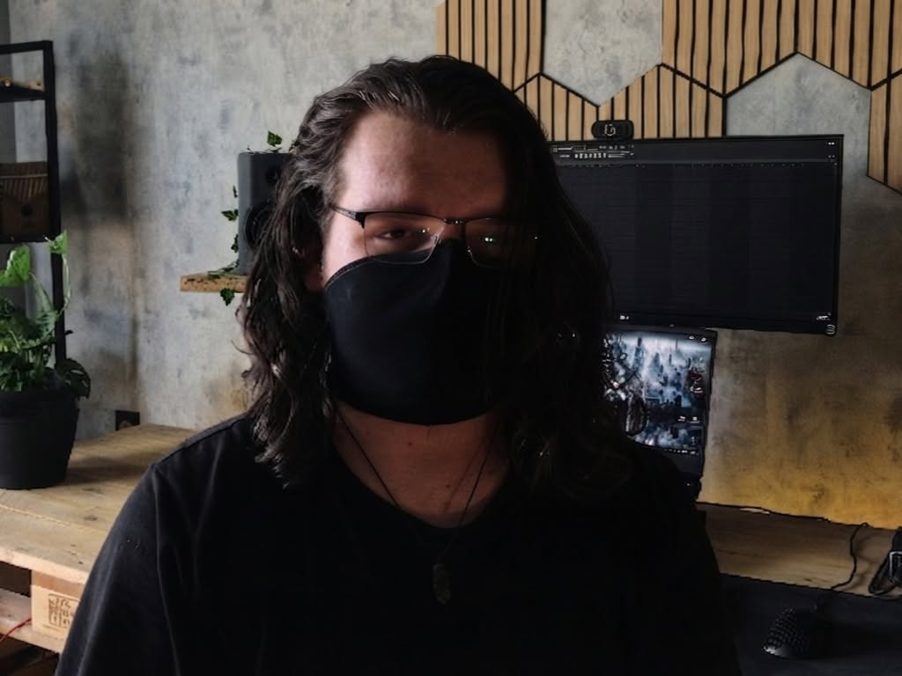
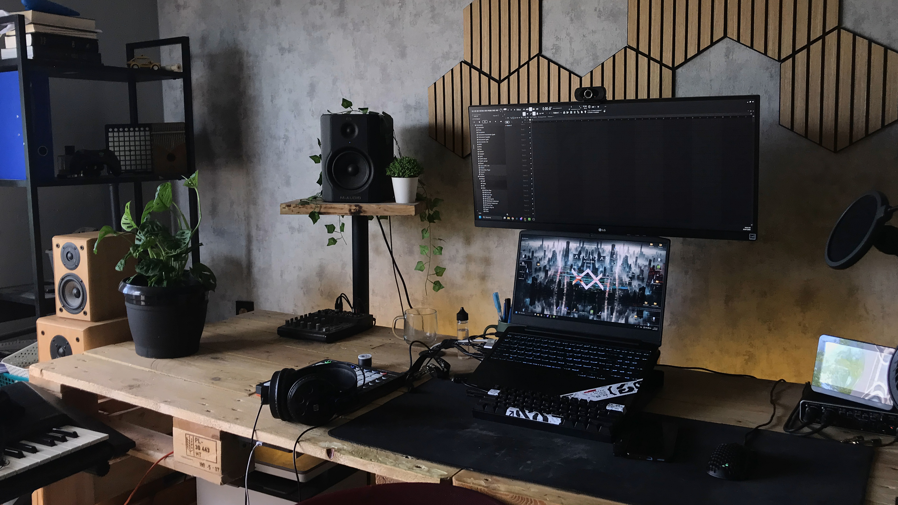

Cześć, tu Olaf.
W sieci funkcjonuję jako HEXIT RELY. Nie traktuję tej strony jako sztywnego CV czy kolejnego cennika usług — to miejsce, w którym chcę pokazać Ci, kim naprawdę jestem jako twórca i czym na co dzień żyje moja głowa.
Od ponad 7 lat zgłębiam dźwięk. Zaczynałem od chaotycznych eksperymentów z syntezatorami w domowym pokoju, a z czasem przerodziło się to w pełną pasję do sound designu gier, kompozycji i miksu.
W tym studio narodził się takze pomysł na striming Zamiast pokazywać wyłącznie "wypolerowany efekt końcowy", odpaliłem Obsa i zacząłem streamować cały proces: błędy, poszukiwania brzmień, układanie perkusji od zera i rozkładanie projektów na czynniki pierwsze.

Cała ta praca dzieje się w jednym miejscu — oto moje stanowisko.
Miejsce, w którym powstaje wszystko
To tutaj nagrywam streamy, produkuję muzykę, testuję kolejne wersje oprogramowania Samplix i planuję kolejne projekty DIY.
Kluczem do dobrego brzmienia nie są drogie wtyczki, ale zbalansowane warunki odsłuchowe, wygoda pracy i narzędzia, które nie przeszkadzają w przepływie kreatywnym.

Mój Setup w 2024 / 2026
Dokładna lista sprzętu, na którym na co dzień nagrywam, gram, produkuję i streamuję.
Interfejsy & Audio
- DAW: Fl Studio & Dla Game DEV FMOD
- Interfejs: Behringer UMC 204HD
Niezawodny wół roboczy. Nie potrzebuję sprzętu za miliony, żeby robić dobrze brzmiące rzeczy. - Interfejs mobilny: Swiftsonic Audio 2
- Mikrofon: Behringer XM 8500 ×2
Monitory & Odsłuch
- Monitory studyjne: M-Audio BX5
- Słuchawki: Presonus HD7
- Douszne MOnitory Odsłuchowe: CCA CRA Douszne
Komputer & Peryferiale
- CPU: AMD Ryzen 5 4600h
- RAM: 16 GB DDR4
- GPU: NVIDIA GTX 1650
- Dyski: NVMe 512 TB + SSD 512 TB + Zewnętrzne ponad 3TB i serwer NAS
Kontrolery MIDI
- MIDI: Yamaha PSR E423
- Kontroler: Launchpad MK2 + Launchpad Mini
Studio DIY
- Biurko: Własnoręcznie z europalet
Zrobione samodzielnie od zera. Najlepszy projekt DIY jaki zrealizowałem.
Streaming
- Oprogramowanie: OBS Studio z własną scenografią
- Oswietlenie: Ledy DIY setup
- Włąsne MAKRO
Jeśli chcesz zobaczyć ten proces na żywo, oto gdzie mnie znajdziesz.
Prowadzę dwa różne kanały, aby każdy znalazł dokładnie to, po co przyszedł.
Hexit Rely (Main)
Miejsce skupione na czystym rzemiośle audio:
- ▶ Sesje tworzenia utworów w DAW na żywo
- ▶ Montowane materiały zza kulis i poradniki
- ▶ Sound design do gier i testowanie wtyczek
Its Hexit IRL (Minecraft & VOD)
Survival w Minecraft, autorskie pluginy, nocne transmisje i pełne zapisy VOD:
- ▶ Survival z widzami, tworzenie pluginów i skryptów serwerowych
- ▶ Wielogodzinne streamy nocne bez cięć i luźne rozmowy o devie
- ▶ Kompletne archiwum VOD dla każdego, kto przegapił live
Dołącz do społeczności Hexit X NOX
Wymiana feedbacku do kawałków, testy presetów, wspólne granie i powiadomienia o każdym live bez kaprysów algorytmów.
Dołącz na Discord ↗Kultura czatu:
Szacunek do innych, merytoryczna dyskusja o muzyce i kodzie, brak toksyczności i spamowania. Wpadaj z dobrą energią!